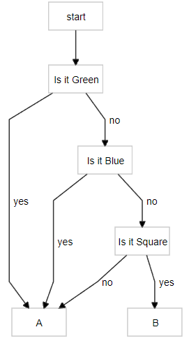

I've known of the term differential privacy for a long while, but only vaguely. Recently, I decided to look a bit more into the topic and also thought it a good place to start/try out interactive explanations. As it turns out, differential privacy is essentially about probabilities and information, which means an excuse to experiment with interactive explanations of relevant areas from probability theory (and an excuse to play with a discrete probability monad).
Of course, there is a great deal more to the subject of differential privacy than I can cover (or looked into) but I think I am satisfied with this as providing a decent high level overview.
One early precursor to DP is the method of randomized response. Proposed by S. L. Warner in 1965 [1], it's a method of confidentially surveying a population.
Suppose you were surveying the population about something controversial and wanted to do so in a manner allowing plausible deniability. You could use the following procedure:
Flip a coin, if it's heads, the responder must answer truthfully and if it's tails they must answer yes. Note that this leaks some information about the responder: if they answer no then you know that they definitely have not performed said action. If they answer, yes, however, you have no way (at that instance in time) of distinguishing between whether it was truthful or the result of a coin flip. But across the entire population, since you control the procedure, you can work backwards to get the true distribution.
Suppose for example, you were surveying individuals about whether they love or hate baconü•ì. They flip a coin and if it's heads they answer truthfully. If it's tails, they must say they Hate Bacon. Using this procedure, the surveyed number of those that love bacon is always ~half the true number in the population. This is because, for bacon loving responses, all the results are true but only get reached half the time. And for bacon hating answers (the protected class), half the time, the answers were truthful while the other half were I love bacon answers converted to I hate the consumption of bacon answers.
In the example below, you can adjust the slider to see how the surveyed numbers change.
True Proportion of Population that Hates Bacon:
20%In the below, assume p is the true proportion that hates bacon. Then:
p = 20%p =
Like Bacon: 0.5 * (1 - ) =
Hate Bacon: 0.5 + 0.5 * =
With some math, we can work out the true numbers:True Against: 2 * ((q=) - 0.5) =
Which you can subtract from 1 to get the proportion that enjoys bacon. If none of this makes sense, play with the slider and it should start to.
Something to note is that if some (ahem, barbaric) human says they love bacon, you definitely know they are speaking the truth (the End Bacon Now controversial but clearly more appropriate true belief is protected). Suppose we wanted to adjust this to be more anonymous?
Differential Privacy was initially expanded upon and given a solid mathematical footing by the prolific computer scientist/cryptographer Cynthia Dwork. It is a large field so we'll only be taking a broad overview of it.
In the example for this section, we'll be surveying people about their favorite sandwich. To keep things simple we'll assume the true preferences of sandwiches are:
Best Sandwich |
Share of Favorites |
|---|---|
Hotdog üå≠ |
10% |
Sandwich ü•ñ |
30% |
Vegan Hamburgerüçî |
60% |
How to tally votes without risking shame or ridicule for your belief that hotdogs are the best sandwich? A simple modification of randomized response allows for this. This time we don't demand a specific answer--if the coin lands heads you speak truthfully but if it lands on tails, you sample uniformly (choose randomly) from among the choices. We can also allow the coin to be loaded or weighted. For example, we can use a coin that comes up heads 1% of the time. As long as we are only interested in population level things, despite the high levels of randomization, we can fully recover the original proportions.
With some algebra, I was able to work out that computing the following, for each possible answer recovers the true underlying percentages: \[p_{true} = \frac{p_{survey} - \frac{1}{|C|}(1 - p_{heads})}{p_{heads}}\]
Where |C| stands for total number of choices in the set C = {choice1,..,choicen}. This time, the slider will control how biased our coin is.
Coin Bias: 40%
Coin Bias: 40%
Differential Privacy is not an impenetrable seal of protection; it is possible to introduce leaks. Two ways that I could think of are attacks involving remembering queries and by asking multiple correlated questions.
If the queries do not retain any data on what each individual response was, privacy remains protected. If instead the responses were recorded, the collector can revisit the data to make new inferences. For example, suppose we were surveying whether people were for or against some action and that against is the protected class. After the population estimates of the proportions have been worked out, one can condition to just those who said against and work out the probability that those who said against truly are against.
In our randomized response scenario, if the proportion of the population that is against is 41%, the probability that those who answered against truly are against is ~59%. With the second differential privacy method, if it were 36% against at the population level, then those responding against are truly against with a 63% chance. This is a large change in probability! However, if a biased coin was instead used, say one that turns up tails 95% of the time, the worst case scenario would only involve going from 49% to 51%. The population level true values are still as precise but the individuals are much more protected.
The amount of information leaked depends on the underlying population probability and increases from zero and then decreases. Here's a graph for the randomized response scenario:
As you can see, if the purpose is to secure the privacy of individual responses, then retaining the data of responses is subideal, especially when 30%-60% of the populace is against. If the results are to be retained, we can at least demand a high bias or a low probability of requiring a truthful response (most differential privacy work is biased towards the concerns of the data collector so they might not agree with my suggestion).
Another manner where which the implementer can cheat is by retaining responses and querying with either the same or a very similar set of questions. If the survey giver keeps asking the same questions, they can get ever more confident as to the true value of the responses. But that is not the only way to act in bad faith. If the survey process constructs different questions whose responses are correlated, they can become fairly certain about true answers in just two queries (or the first if enough different questions are asked).
In our final scenario, we will visit a world of dogs, mice and cats ruled by fat cats. The Fat Cats are performing what is ostensibly a demographic survey. To respect the right to anonymity of the denizens, they tell everyone they're implementing differential privacy. Those extra few probing questions? To provide better services, they say. In actuality, they want to figure out who to increase insurance premiums for (you see, dogs are much too playful and mice keep getting injured by cats).
We will take the perspective of a single animal being queried. In addition to "which species are you", we will also ask: what is your favorite food (fish, meat or cheese) and what is your favorite toy (bone, yarn,egg carton or cardboard box)? There is a predictor, a bayesian, that doesn't get to see our selected species. We simulate it asking questions each time the button is pressed (you can also think of it as different phrasings each time). The Fat Cats are sly and their coin is slightly rigged--52% of the time it requires truth and 48% of the time allows randomization. Directly below (for comparison) we will also simulate our change in predicted species from asking the same single question of are you a dog or cat or mouse? a number of times equal to button presses.
Click the query button to see how our bayesian changes its confidence in its predictions.
Select your species:
Relationship between questions:
|
Times asked: 1 |
If you try reset a few times you might notice that mice are hardest to guess (since each of their non-food tastes share a bit with one of the other species). You might also notice that a surprising number of times, the correlator guesses correctly in one try (but can, especially for mice, fixate on the wrong species).
In this article we've covered only a small part of Differential Privacy, there remain many more sophisticated methods to inject noise and protect the user. Nonetheless, we were able to explore its core aspect. While Differential Privacy is a way to maintain privacy when data must be collected, it's no panacea. If there's no way to audit the process, an element of trust will always be needed. A hostile actor might technically be offering privacy but by retaining answers, using weights biased against the user, multiple identical queries (an issue in the digital world where devices can act on your behalf without your knowing the details) or designing queries so as to leverage correlations much more information than naively assumed can be leaked. All that said, properly implemented Differential Privacy strikes a balance between the needs of the user and the polling entity.
The following section is a bit more technical and assumes programming knowledge.
The likelihoods for the bayesians were chosen lazily. In particular, the correlator's likelihood is not even properly sensible: it simply uses the joint probability of seeing those particular items together and so is very jumpy. Works well enough for this demonstration's purposes though.
update (fun (_,food,toy,catnip) species -> probabilityOf ((=) (food,toy,catnip)) (jointProb species)) prior reqs
For the multiple asker:
update (fun species (speciesHypth,p) -> if speciesHypth = species then (1. - p) else p) priorMult animal
I'd originally wanted to cover mutual information in the main text but realized I could not do it at the level of detail I preferred and so moved it here. Mutual information is an important concept, it's definition is:
\[\sum_{(x,y)\in X \times Y} p(x,y) \log\left(\frac{p(x,y)}{p(x)p(y)}\right)\]
When X and Y are independent we get log(1) = 0. But a more motivated definition is: I(X;Y) = H(X) - H(X|Y) where H(X) stands for the entropy or our uncertainty about the random variable X. Mutual information then is, how uncertain we remain about X given that we know Y. If X and Y are independent of each other then knowing Y changes nothing about our uncertainty around X. But when they are correlated, knowing one tells us something and reduces our uncertainty about the other. In our Differential Privacy example, positive mutual information between the subjects of our questions allows us to narrow down and reduce our uncertainty about attributes that in principle, should have been private.
Entropy is roughly, our uncertainty about possible outcomes. We want this concept to be low when the bulk of probability is concentrated on a few outcomes and high when it's diffuse. For a binary proposition, this is a function that's low for low probability and high probability events (i.e. 1% means we are very certain this thing will not happen). Additionally, we want this uncertainty to change smoothly with changes in probability and to not depend on the order in which the probabilities are presented. Finally and most importantly, is the notion of coarse graining or throwing away detail (going from a shiny green toy car to a toy car).
If we have that the entropy at the coarse grained level is equal to that of our full level of detail minus the branching distinctions we don't care about, there is essentially only one form entropy can take. That is, the entropy of our coarse graining should be less than or equal to that of the fine grained level. It is less exhausting to communicate at a high level than to finely go over pedantic distinctions (programming can be tedious).
If we have a set {a,b,c}, sets A = {a,b}, B = {c} and we want a function H:Distribution -> Real such that H({a,b,c}) = H({A,B}) + (pAH({A}={a,b}) + pBH({B} = {c})), the function which solves this is (for discrete systems): -Σx(p(x) * log p(x)). In code:
let entropy dist = -Seq.sumBy (fun (_,p) -> p * log p) dist
Why this is has been derived in many places but to boost intuition I will expand upon our simple example. Let's define:
let conditionWith projectWith f d = Array.filter (fst >> projectWith >> f) d |> Array.normalizeWeights
This filters our space to matching conditions and ensures the probabilities sum to one. Let's encode our example.
let states = categorical ["a", 0.3; "b",0.5; "c",0.2]
let coarse = distr {
let! state = states
return match state with
| "b"
| "a" -> "A"
| _ -> "B"
}
Notice that A has an 80% chance of occurring and B, a 20% chance. The entropy of our full system is ~1.48 bits and our coarse system is 0.72 bits. In code our above requirement is:
let statesA = conditionWith id (fun s -> s = "a" || s = "b") (pmf states)
let statesB = conditionWith id ((=) "c") (pmf states)
entropyDistr states = entropyDistr coarse + 0.8 * entropy (statesA) + 0.2 * entropy (statesB)
The coarse graining requirements says the fine grained entropy should equal our coarse graining and the entropy of each of the contained subsystems weighted by their probability. This makes sense but a lack of appreciation for this can lead people astray when attempting to define emergence.
We can now move on to conditional entropy. Conditioning effectively means filtering to some condition as we showed above. Thus, the conditional entropy is, given we've filtered to some subspace that matches our condition, what is the entropy of that subspace?
let inline conditionEntropyOn projectWith x d = conditionWith projectWith ((=) x) d |> entropy
let conditionalEntropy projectWith (joint:Distribution<_>) =
Set.map projectWith joint.Support
|> Seq.sumBy (fun x ->
let p = probabilityOf (projectWith >> (=) x) joint
let h = conditionEntropyOn projectWith x (pmf joint)
p * h)
projectWith is a function we pass in to select on a tuple. For example, if we have (a,b,c) then projectWith = third will give us c Our conditional entropy is then conditioning on each possible value that the projected variable can take on, calculating the entropy of that space and then multiplying it by the probability of the current value. It's the average entropy from conditioning our random variable of focus across possible values of another random variable. We can now define:
mutualInformation = entropyDistr X - (conditionalEntropy snd joint)
An explicit example always helps. We define the below joint distribution based on the animal example above and visualize its joint distribution:
let population = categorical ["cat",0.5; "dog",0.4; "mouse",0.1]
let joint = distr {
let! animal = population
let! toy = favtoy animal
return (animal,toy)
}
let ce = conditionalEntropy snd joint
let mi = mutualInformation joint
let mi2 = entropyDistr pop - ce
Relative entropy or KL Divergence (DKL(P||Q)) is a measure of how well one distribution codes another distribution. Or the loss (in bits) incurred from using the wrong distribution to code for another distribution. If DKL(Posterior||Prior) represents the change in our distribution after updating with new information, then it can be viewed as surprise. Indeed, the notion probably well matches the colloquial use of the term meaningful information when constrained to state changes the agent experiences in practice.
DKL(P||Q) is related to mutual information. I(X;Y) = DKL(P(X,Y)||P(X)P(Y)). Their forms in our discrete space are fairly similar:
let mutualInformation (joint:Distribution<_>) =
joint.Support |> Seq.sumBy (fun(x,y) ->
let px = probabilityOf (fst >> (=) x) joint
let py = probabilityOf (snd >> (=) y) joint
let pxy = probabilityOf ((=) (x,y)) joint
pxy * log(pxy/(px * py)))
let kldivergence (pA:Distribution<_>) (pB:Distribution<_>) =
pA.Support |> Seq.sumBy (fun x ->
let p_a = probabilityOf ((=) x) pA
let p_b = probabilityOf ((=) x) pB
p_a * log(p_a/ p_b))
Although there are derivations for why entropy should be as it is, they require an uncommon level of mathematical sophistication. The following might be a bit more helpful for a start as an intuition builder.
For a start, we will look at addressing items in terms of indexing some of their properties. Suppose you had 4 things and wanted to label them. One way to do this would be to number them: e.g. Items #0-#3. If we were to use the base 2 numbering system instead of base 10, we would have the added advantage that our labelling system could also be looked at in terms of addressing each item with respect to whether it possessed or not some property. For example:
Imagine our labels as the base 2 numbers: #00, #01, #10 and #11.
Is it green? Then Item #1 OR Is it Blue? Then Item #2 OR Is It Green AND Blue? Then Item #3. Else It must be Item #0.
In terms of base 2, with 3 things, we would need at most 2^2 = 4 labels. With 10 things we would need at most 2^4 = 16 labels. In general, N will be ≤ 2 ^(ceil log2 N), where ceiling rounds up always (5.2 -> 6 or 5.8 -> 6). Essentially, all we're doing is computing the maximum power 2 needs to be raised to in order to be greater than or equal to N. If we have b=ceil log2 N we can simply say N items require no more than b properties to address or distinguish between them. In our example, that was checking whether green or blue to distinguish between 4 items.
We can also look at it in terms of asking yes/no questions (this is gone over in clear detail in [3]). This creates a (balanced?) binary tree. If we have N items, we can address or look them up in the tree using no more than log2 N steps. Imagine playing a guessing game; even if you had to choose between a billion numbers, it would take no more than 30 guesses if you kept slicing the possibilities in half. For our questions, the rare and more surprising items will be deeper in the tree.
Intuitively, things that occur rarely should be more surprising and so we should devote more space or attention to them. This can be viewed as difficulty distinguishing that item and requiring many questions to be confident about it. If we have each split at 0.5 probability then each node at depth d will have 1/2depth or 2-depth reachability probability (if there is more than one path to the node, we take their sum).
Suppose we have an object that can be in {A,B} and 'B' has probability 12.5%, then we should devote -log2(0.125) or 3 bits of uncertainty space (technical term is surprisal) to it. Meanwhile 'A', with p = 87.5%, gets about 0.19 bits of surprisal...not as much. Entropy is our (weighted) average surprisal over possible states (0.54 bits for this example). For a high entropy (uniform) situation, I imagine a deep tree with many nodes at the bottom, each having an equal probability of being reached.

You can most easily play with the probabilistic programming code by copy and pasting code sections in https://gist.github.com/sir-deenicus/d8183d73ed12c2aa7d57f621c8a99ad1 into http://fable.io/repl/
[1] https://en.wikipedia.org/wiki/Randomized_response